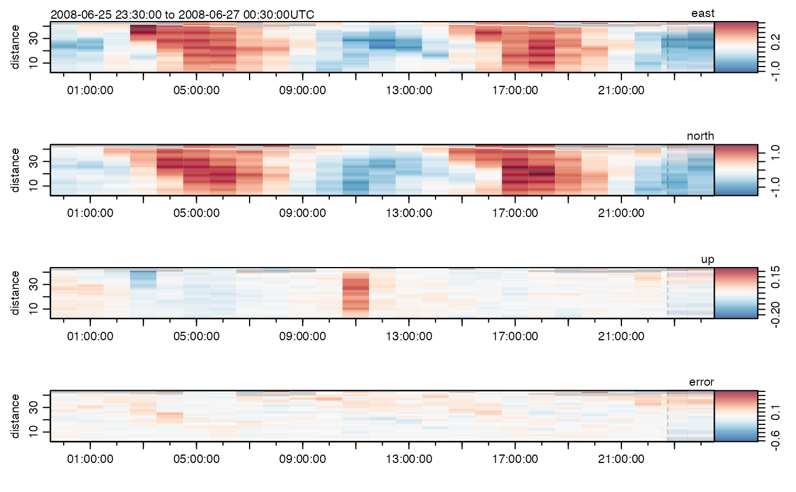

Read a netcdf file and create an adp object
ncdf2adp.RdThis works by calling ncdf2oce() and then using class() on
the result to make it be of subclass "adp".
ncdf2adp(ncfile = NULL, varTable = NULL, debug = 0)Arguments
- ncfile
character value naming the input file.
- varTable
character value indicating the variable-naming scheme to be used. This is provided to
read.varTable(), the documentation of which explains the possibilities for pre-defined schemes named"argo"and"whp"and user-supplied files of similar format.- debug
integer, 0 (the default) for quiet action apart from messages and warnings, or any larger value to see more output that describes the processing steps.
Value
ncdf2adp() returns an adp object.
See also
Other things related to adp data:
adp2ncdf()
Examples
library(ocencdf)
# Example with an adp file from oce package
data(adp, package="oce")
summary(adp)
#> ADP Summary
#> -----------
#>
#> * Filename: "(redacted)"
#> * Instrument: adcp
#> * Manufacturer: teledyne rdi
#> * Serial number: (redacted)
#> * Firmware: 16.28
#> * Location: 47.88126 N, -69.73433 E
#> * Frequency: 600 kHz
#> * Ensemble Numbers: 5041, 5401, ..., 13321, 13681
#> * Transformation matrix::
#> 1.462 -1.462 0.000 0.000
#> 0.000 0.000 -1.462 1.462
#> 0.266 0.266 0.266 0.266
#> 1.034 1.034 -1.034 -1.034
#> * Time: 2008-06-26 to 2008-06-27 (25 samples, mean increment 1 hour)
#> * Data Overview
#>
#> Min. Mean Max. Dim. NAs
#> v [m/s] -0.97553 0.071645 1.4917 25x84x4 332
#> q 24 113.49 248 25x84x4 0
#> a 52 95.313 211 25x84x4 0
#> g 0 95.352 100 25x84x4 0
#> distance [m] 2.23 22.98 43.73 84 0
#> time 2008-06-26 2008-06-26 12:00:00 2008-06-27 25 0
#> pressure [dbar] 37.786 39.05 40.315 25 0
#> temperature [°C, ITS-90] 3.45 3.6904 4.05 25 0
#> salinity [PSS-78] 35 35 35 25 0
#> depth [m] 37.5 38.792 40.1 25 0
#> soundSpeed [m/s] 1465 1466.1 1468 25 0
#> heading [°] 260.61 273.62 294.98 25 0
#> pitch [°] -6.9303 -5.9062 -2.9328 25 0
#> roll [°] 3.36 4.4868 6.21 25 0
#> headingStd [°] 1 1 1 25 0
#> pitchStd [°] 0.1 0.1 0.1 25 0
#> rollStd [°] 0 0 0 25 0
#> pressureStd 79 111.24 152 25 0
#> xmitCurrent 89 91.92 96 25 0
#> xmitVoltage 134 138.2 143 25 0
#> ambientTemp 116 116.88 117 25 0
#> pressurePlus 82 82.64 83 25 0
#> pressureMinus 68 68.32 69 25 0
#> attitudeTemp 110 110.88 111 25 0
#> attitude [°] 130 130 130 25 0
#> contaminationSensor 159 159 159 25 0
#>
#> * Processing Log
#>
#> - 2019-08-12 15:29:36 UTC: `read.oce("/data/archive/sleiwex/2008/moorings/m09/adp/rdi_2615/raw/adp_rdi_2615.000", ...)`
#> - 2019-08-12 15:29:36 UTC: `beamToXyzAdp(x = beam)`
#> - 2019-08-12 15:29:36 UTC: `xyzToEnuAdp(x, declination=-18.1, debug=0)`
plot(adp)

# Transfer to netcdf and back to see if results make sense
oce2ncdf(adp, ncfile="adp.nc")
#> Defaulting varTable to "-".
ADP <- ncdf2adp("adp.nc")
summary(ADP)
#> ADP Summary
#> -----------
#>
#> * Filename: "(redacted)"
#> * Instrument: adcp
#> * Manufacturer: teledyne rdi
#> * Serial number: (redacted)
#> * Firmware: 16.28
#> * Location: 47.88126 N, -69.73433 E
#> * Frequency: 600 kHz
#> * Ensemble Numbers: 5041, 5401, ..., 13321, 13681
#> * Transformation matrix::
#> 1.462 -1.462 0.000 0.000
#> 0.000 0.000 -1.462 1.462
#> 0.266 0.266 0.266 0.266
#> 1.034 1.034 -1.034 -1.034
#> * Time: 2008-06-26 to 2008-06-27 (25 samples, mean increment 1 hour)
#> * Data Overview
#>
#> Min. Mean Max. Dim. NAs
#> time 2008-06-26 2008-06-26 11:59:57 2008-06-27 25 0
#> distance [m] 2.23 22.98 43.73 84 0
#> v [m/s] -0.97553 0.071645 1.4917 25x84x4 332
#> a 52 95.313 211 25x84x4 0
#> g 0 95.352 100 25x84x4 0
#> q 24 113.49 248 25x84x4 0
#> pressure [dbar] 37.786 39.05 40.315 25 0
#> temperature [°C, ITS-90] 3.45 3.6904 4.05 25 0
#> salinity [PSS-78] 35 35 35 25 0
#> depth [m] 37.5 38.792 40.1 25 0
#> soundSpeed [m/s] 1465 1466.1 1468 25 0
#> heading [°] 260.61 273.62 294.98 25 0
#> pitch [°] -6.9303 -5.9062 -2.9328 25 0
#> roll [°] 3.36 4.4868 6.21 25 0
#> headingStd [°] 1 1 1 25 0
#> pitchStd [°] 0.1 0.1 0.1 25 0
#> rollStd [°] 0 0 0 25 0
#> pressureStd 79 111.24 152 25 0
#> xmitCurrent 89 91.92 96 25 0
#> xmitVoltage 134 138.2 143 25 0
#> ambientTemp 116 116.88 117 25 0
#> pressurePlus 82 82.64 83 25 0
#> pressureMinus 68 68.32 69 25 0
#> attitudeTemp 110 110.88 111 25 0
#> attitude [°] 130 130 130 25 0
#> contaminationSensor 159 159 159 25 0
#>
#> * Processing Log
#>
#> - 2023-06-10 13:39:43 UTC: `Create oce object`
plot(ADP)
 # Remove temporary file
file.remove("adp.nc")
#> [1] TRUE
# Remove temporary file
file.remove("adp.nc")
#> [1] TRUE